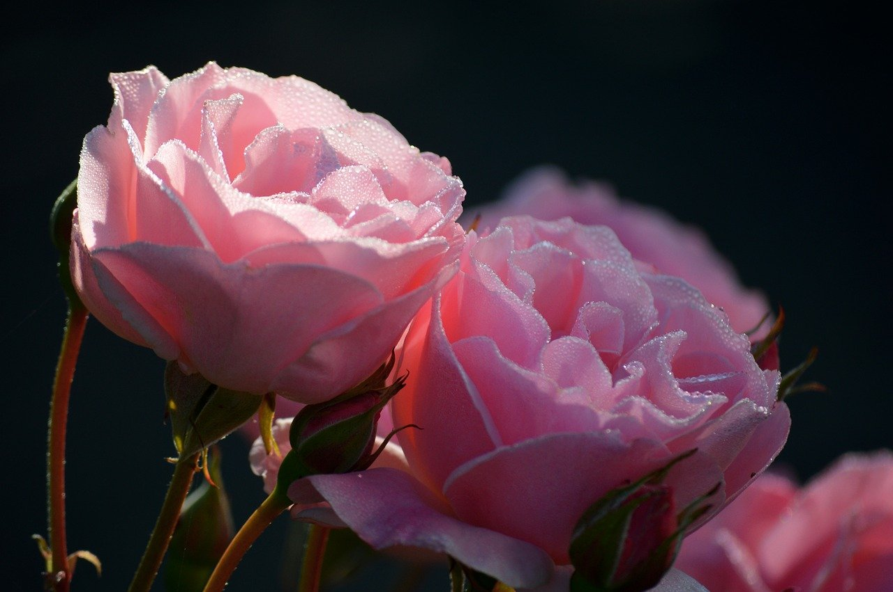
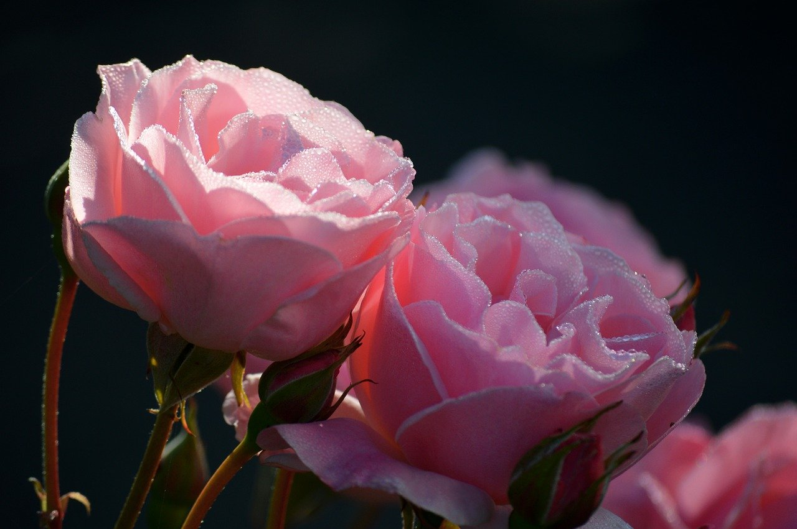

What is Pink?
Pink is a mix of white and red. The color pink is often associated with sweetness,romance, and charm. The name pink comes from the Dianthus plumarius, more commonly know as a wild pink flower. Shades of pink can also be found in other areas of nature, like flamingos, pink sapphires, and even in the sky during sunsets.

 



Fun Facts
- The expression in the pink means to be in good health.
- One of the most famous examples of pink in visual media is Marilyn Monroe's pink dress in the 1953 film Gentlemen Prefer Blondes.
- Barbie has her own shade of pink: Pantone 216C. In HEX code, that would be #DA1884.